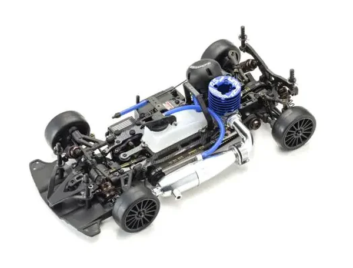

京商 V-One R4 Evo.3

引用元画像：京商公式サイト
📋 基本情報
| メーカー | 京商（Kyosho） |
|---|---|
| 機種名 | V-One R4 Evo.3 |
| シャーシ略称 | V-One R4 Evo.3 |
| 型番 | 33217 |
| JAN | 4548565472765 |
| 発売時期 | 2024年6月 |
| 価格 | ¥96,800（税込） |
| 生産状況 | 現行販売中 |
| カテゴリー | ラジコンカー（1/10スケール GP 4WD） |
| サブカテゴリー | 12-15エンジン ツーリングカー（ピュアテンGP 4WD、スポンジ&ラバータイヤ両対応） |
| シリーズ | V-ONE R4シリーズ 最新進化型 |
📏 シャーシスペック
| 全長 | 368mm |
|---|---|
| 全幅 | 200mm |
| 全高 | 105mm |
| ホイールベース | 258mm |
| トレッド | フロント174mm / リヤ170mm |
| ギヤ比 | 7.18:1 / 5.09:1（2スピードトランスミッション） |
| タイヤ | 別売（スポンジタイヤ・ラバータイヤ両対応） |
| フレーム | 新型Evo.3アルミ製メインシャーシ（エンジンマウント固定ビスのセンター化） |
| 全備重量 | 約1,700g（エンジン別売） |
⚙️ 駆動系
| 駆動方式 | ベルトドライブ4WD |
|---|---|
| デフギヤ | ギヤデフ（前後） |
| トランスミッション | 2スピードトランスミッション |
| ドライブシャフト | ドッグボーンドライブシャフト |
| ベアリング | フルベアリング仕様 |
| クラッチ | OS-12TGエンジン対応クラッチ ラバータイヤ用・スポンジタイヤ用のクラッチスプリング付属 |
| エンジン | 12-15クラス後方排気エンジン（別売） 推奨：OS-12TGエンジン |
🔧 サスペンション
| 形式 | 4輪ダブルウィッシュボーン独立懸架 |
|---|---|
| ダンパー | コイルスプリング オイルダンパー×4本 |
| ダンパースプリング | ラバータイヤ用・スポンジタイヤ用の両方を同梱 |
| スタビライザー | バータイプフロントスタビライザー標準装備 線径を変えることでコーナリング特性の微調整が可能 |
💡 特徴
スポンジ&ラバータイヤに対応可能なレース用GPツーリングカーの最新進化型
- 京商主催レースのKYOSHO CUP用マシンとして、そしてメーカーを問わないオープンレースを戦うマシンとしても数多くのユーザーに支持
- 従来のV-ONE R4 Evo.2をベースに、2023年に登場したEvo.3シャシーコンバージョンキットで採用された各種新パーツを標準装備
- フロントバルクヘッドの形状を見直してスタビライザーを変更するなど、最新のレースシーンに対応した進化
新型Evo.3メインシャーシ - エンジン搭載法をセンター固定式に見直し
- エンジンマウント固定ビスのセンター化で左右のしなりを均一化し、クセのないコーナリング特性を実現
- シャシーのしなりを最適化し、コーナリングにおける左右ステアリング特性のクセも解消
- 十分な剛性と適度なしなり特性を両立
新開発ワンピースエンジンマウント
- 新開発のワンピースエンジンマウントは2本の中央固定ビスで左右のしなりを均一化し、制御性を向上
- エンジンをガッチリマウントできる構造で振動を最小化
バータイプフロントスタビライザー
- フロントバルクヘッドの設計変更によって装備可能になったバータイプのフロントスタビライザー
- 線径を変えることでコーナリング特性の微調整が行える
- 従来のプレートタイプから進化したバータイプで、より細かなセッティングが可能
受信機&サーボ用バッテリー搭載トレーも新設計
- シャシーのロール特性を改善
- バッテリーの交換も容易に
スポンジタイヤとラバータイヤの両方に対応可能なパッケージ
- クラッチは日本国内での使用率が高いOS-12TGエンジンにフィットするタイプ
- 京商カップ指定のラバータイヤと、オープンレースのスポンジタイヤそれぞれに適したクラッチスプリングが付属
- フロントサイドプーリーとダンパースプリングもラバー&スポンジタイヤ用の両方を同梱
- キットを購入するだけでどちらのレースにも使用できる
国内外のレースで豊富な実績を持つV-ONE R4 Evo.2の信頼性はそのまま
- 実戦重視のアップデートを施したV-ONE R4 Evo.3
- レースユースはもちろん、走行そのものを楽しみたいというユーザーにも満足いただける性能を提供
🔧 ぽすとそに工房での修理実績
修理難易度
★★☆☆☆（比較的簡単）
パーツ情報も豊富で、発売されて1年程度のため情報量が多く、修理は比較的容易です。
よくある故障・注意点
- オイルダンパーのオイル漏れ（Oリング劣化）
- ドライブベルトの磨耗・破損（定期的な点検が必要）
- ギヤデフのギヤ磨耗（ハイパワーエンジン使用時）
- バータイプスタビライザーの調整不良
- クラッチスプリングの選択ミス（ラバータイヤ用・スポンジタイヤ用を間違える）
修理のポイント
- オイルダンパーは定期的にオイル交換とOリング交換を実施
- ドライブベルトの張り具合を定期的にチェック（中央部で5mm程度の押し込み）
- ギヤデフは定期的にシリコンオイルの交換を実施
- バータイプスタビライザーは線径を変えることでコーナリング特性を微調整可能
- クラッチスプリングはラバータイヤ用・スポンジタイヤ用を正しく使い分ける
- ワンピースエンジンマウントの固定ビスは定期的にチェック
その他の特徴
- 2024年6月発売の最新モデルのため、パーツ供給が豊富
- V-One R4シリーズとの部品互換性が非常に高い
- スポンジタイヤとラバータイヤの両方に対応可能な唯一のモデル
- 京商カップ用マシンとしても、オープンレース用マシンとしても最適